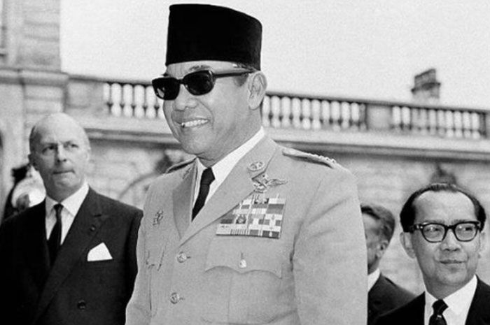

TIMELINE
1901
born in Surabaya, Indonesia
1916
finished University education
1920
fell in love with Siti Oetari and married
1923
divorced with Siti Oetari and married with his second wife Inggit and lasted for 20 years before their divorce
1943
has a third wife named Fatmawati and blessed with 5 childrens
1945
together with Bung Hatta declared independence from the Dutch and other countries, and become the first president of the country (later on called Indonesia)
1970
died in the age of 69 in Jakarta, Indonesia
| In A Nutshell  | |
|---|---|
| Born | Ir.Soekarno Surabaya, 1901 |
| Died | 1970 (aged 69) Jakarta, Indonesia |
| Occupation | First President Of Indonesia |
| Children | Megawati Soekarno Putri (the fifth president of Indonesia) Guruh Soekarnoputra Rachmawati Soekarnoputri Sukmawati Soekarnoputri |